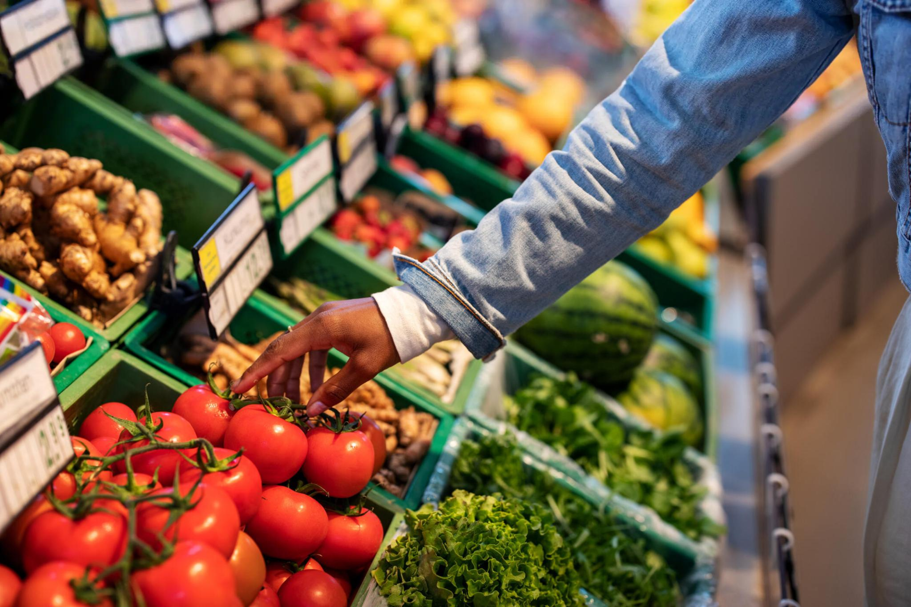
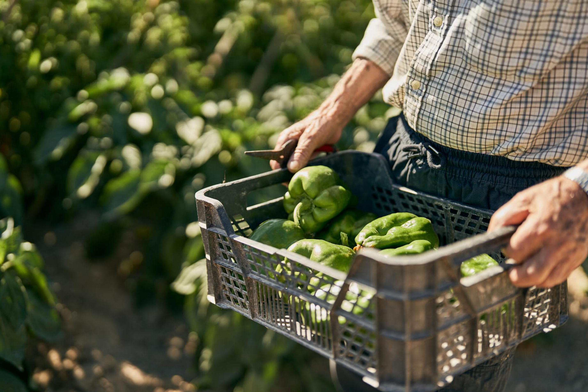
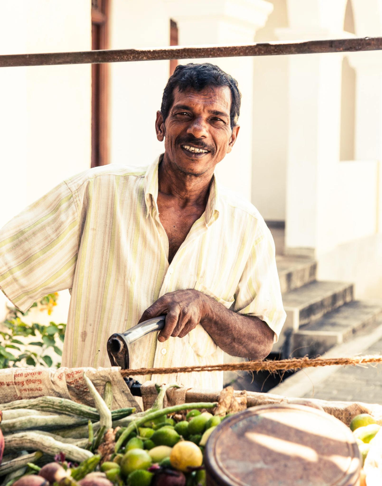

A paddy field is a flooded field of arable land used for growing semiaquatic crops, most notably rice and taro.
It originates from the Neolithic rice-farming cultures of the Yangtze River basin in southern China, associated with pre-Austronesian and Hmong-Mien cultures.
It was spread in prehistoric times by the expansion of Austronesian peoples to Island Southeast Asia, Southeast Asia including Northeastern India, Madagascar,
Melanesia, Micronesia, and Polynesia. The technology was also acquired by other cultures in mainland Asia for rice farming, spreading to East Asia, Mainland
Southeast Asia, and South Asia.Fields can be built into steep hillsides as terraces or adjacent to depressed or steeply sloped features such as rivers or marshes.
They require a great deal of labor and materials to create and need large quantities of water for irrigation. Oxen and water buffalo, adapted for life in wetlands, are important working animals used extensively in paddy field farming.
Paddy cultivation should not be confused with cultivation of deepwater rice, which is grown in flooded conditions with water more than 50 cm (20 in) deep for at least a month.
Paddy rice originated from wild rice domestication in southern China around 13,500 to 8,200 years ago.

A supermarket is a self-service shop offering a wide variety of food, beverages and household products, organized into sections.
This kind of store is larger and has a wider selection than earlier grocery stores, but is smaller and more limited in the range of merchandise than a hypermarket or big-box market.
In everyday United States usage, however, "grocery store" is often used to mean "supermarket".The supermarket typically has places for fresh meat, fresh produce, dairy, deli items,
baked goods, and similar foodstuffs. Different from traditional supermarkets and traditional natural food stores, fresh stores emphasize perishables and offer center-store assortments that differ
from those of traditional retailers—especially in the areas of ethnic, natural, and organic, e.g., Whole Foods, The Fresh Market, and some independents.

Organic food, ecological food, or biological food are foods and drinks produced by methods complying with the standards of organic farming.
Standards vary worldwide, but organic farming features practices that cycle resources, promote ecological balance, and conserve biodiversity.
Organizations regulating organic products may restrict the use of certain pesticides and fertilizers in the farming methods used to produce such products.
Organic foods are typically not processed using irradiation, industrial solvents, or synthetic food additives.n the 21st century, the European Union, the United States,
Canada, Mexico, Japan, and many other countries require producers to obtain special certification to market their food as organic.
Although the produce of kitchen gardens may actually be organic, selling food with an organic label is regulated by governmental food safety authorities, such as the
National Organic Program of the US Department of Agriculture.Demand for organic foods is primarily driven by consumer concerns for personal health and the environment,
such as the detrimental environmental impacts of pesticides.

A crop is a plant that can be grown and harvested extensively for profit or subsistence.
In other words, crop is a plant or plant product that is grown for a specific purpose such as food, fibre or fuel.
When plants of the same species are cultivated in rows or other systematic arrangements, it is called crop field or crop cultivation.
Most crops are harvested as food for humans or fodder for livestock.Important non-food crops include horticulture, floriculture and industrial crops.
Horticulture crops include plants used for other crops (fruit trees). Floriculture crops include bedding plants, houseplants, flowering garden and pot plants,
cut cultivated greens, and cut flowers. Industrial crops are produced for clothing (fiber crops e.g. cotton), biofuel (energy crops, algae fuel), or medicine (medicinal plants).
There are various methods of cropping that are used in the agricultural industry, such as mono cropping, crop rotation, sequential cropping, and mixed intercropping.
Each method of cropping have their purposes and possibly disadvantages to them as well. Himanshu Arora defines mono cropping as where a field only grows one specific crop year round.

A farmer is a person engaged in agriculture, raising living organisms for food or raw materials. The term usually applies to people who do some combination of raising field crops,
orchards, vineyards, poultry, or other livestock. A farmer might own the farmland or might work as a laborer on land owned by others. In most developed economies, a "farmer" is usually a farm owner (landowner),
while employees of the farm are known as farm workers (or farmhands). However, in other older definitions a farmer was a person who promotes or improves the growth of plants, land, or crops or raises animals (as livestock or fish) by labor and attention.
Over half a billion farmers are smallholders, most of whom are in developing countries and who economically support almost two billion people. Globally, women constitute more than 40% of agricultural employees.